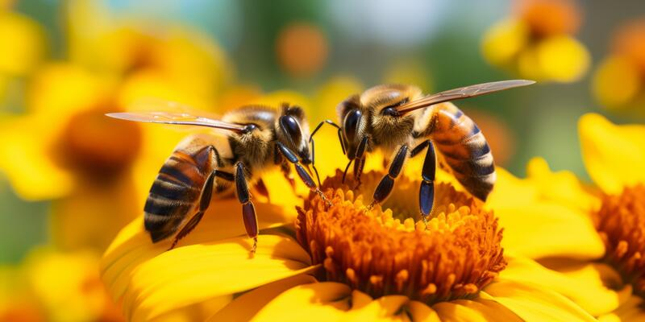
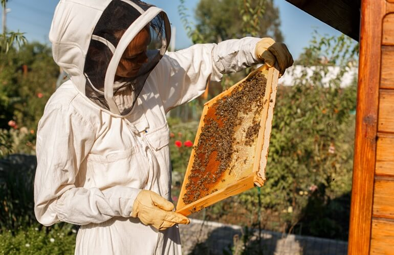
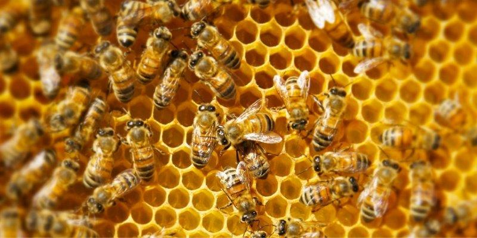

Introdução à Criação de Abelhas
Se você está interessado em criar abelhas, este blog é o lugar certo para você!
Equipamentos Necessários
Para começar a criar abelhas, você precisará de alguns equipamentos básicos.
Cuidados com as Abelhas
Manter suas abelhas saudáveis é fundamental para o sucesso da apicultura.
